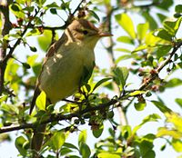
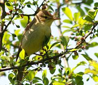

| Melodious Warbler | |
|---|---|
|  | |
| Conservation status | |
| Binomial name | |
| Hippolais polyglotta (Vieillot, 1817) |
| Melodious Warbler | |
|---|---|
|  | |
| Conservation status | |
| Binomial name | |
| Hippolais polyglotta (Vieillot, 1817) |
The Melodious Warbler (Hippolais polyglotta) is an Old World warbler in the tree warbler genus Hippolais. It breeds in southwest Europe and northwest Africa. It is migratory, wintering in sub-Saharan Africa.
This small passerine bird is a species found in open woodland with bushes. 3-5 eggs are laid in a nest in a tree or a bush.
This is a medium-sized warbler, 12-13cm in length, and similar to its eastern counterpart, Icterine Warbler. The adult has a plain brown back and wings, and yellowish underparts. The bill is strong and pointed and the legs are brown. The sexes are identical, as with most warblers, but young birds are paler on the belly.
Like most warblers, it is insectivorous, but will take other small food items including berries.
The song is a pleasant babbling.

{kind=link}